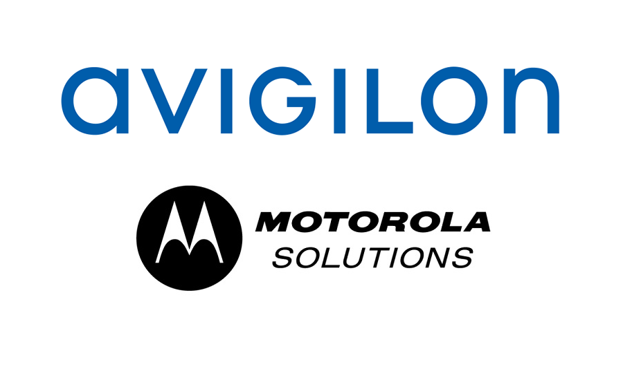

Digital Cameras

What is a PTZ Camera?
-Pan, Tilt, Zoom
-Cameras able to pan left-right, tilt up-down, and zoom in and out
-Gernally used in wide open spaces or areas that require 180 or 360 degree coverage
What is a fixed camera?
- Cameras that are unable to move.
- Generally in Bullet or Dome styles
- Often in used in areas that a fixed image is always required
- Since they are static, you know it will always cover that area
H4 Dome Camera

H4 Bullet Camera

H4 Multi-sensor(180)

H5SL Dome Camera

H4 PTZ

H5A PTZ